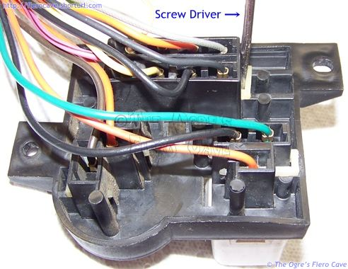
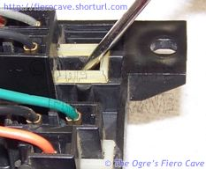
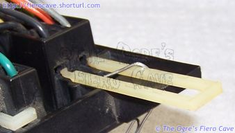
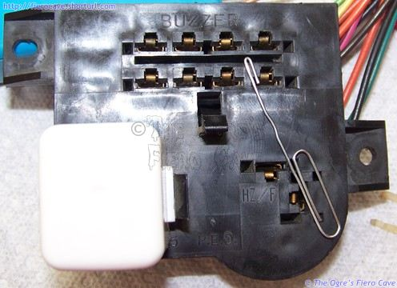
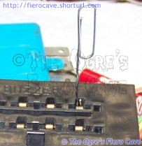
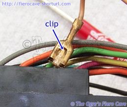
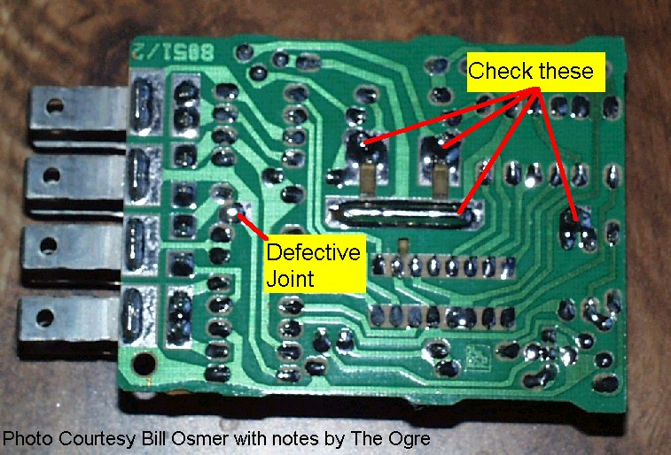

Go Home
Site Map
Go Home
Site Map
Remove a Function
Step 1. Remove the TPA.
(What is TPA? See Terminal Access.)


TPA is easy to pull out. I used a screw driver for the pictures. TPA is all the way out? TPA goes in one way. Look for a hook on TPA. (Ignore wire, it just use as a holder.)
Step 2. Unlock the Terminal.
 
Push paper clip all the way in. (Note: Fold paper clip to unlock terminal. It's easier.)
Step 3. Remove the Terminal.

The clip, above, is what the paper clip was push from the front.

Defect Location
